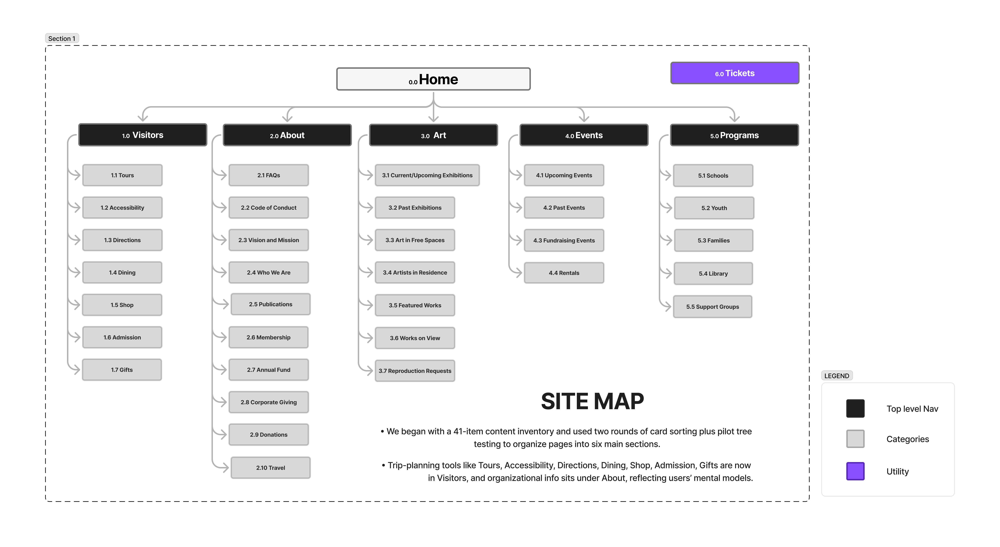

Role
Information Architecture · Content Strategy
MCA Chicago
IA Redesign
A visitor-focused navigation redesign for the Museum of Contemporary Art Chicago website. The project reorganized 41 content items into clearer categories through inventory, card sorting, tree testing, sitemap design, and mobile wireframe task flows.

Project Type
Information architecture redesign
Methods
Inventory, card sort, tree test, wireframes
Timeline
April 2025 - June 2025
Overview
Reframing museum navigation around visitor goals.
MCA Chicago’s original navigation made users work harder than necessary to find trip-planning, ticketing, exhibition, education, and event information. Important pages were duplicated across sections, labels were inconsistent, and several top-level items sent visitors away from the main site.
Our redesign grouped the site around clearer visitor-focused categories so users could plan visits, explore art, find events, and access programs without relying on guesswork.
Process
The IA was tested through inventory, sorting, and navigation validation.
Content Inventory
Audited unique site items
We reviewed the MCA site and identified 41 unique content items across 11 main navigation headings after removing duplicates.
Card Sort Rounds
Tested grouping patterns
Two closed card-sort rounds helped confirm how visitors expected trip-planning, programs, exhibitions, and support pages to group.
Tree Test Users
Validated navigation paths
Tree testing checked whether users could find Directions, Exhibitions, Membership, Tours, Tickets, and Events within the revised structure.
Audience
The navigation needed to support three major visitor groups.
Local Visitors
Repeat museum visitors
People living in Chicago or nearby suburbs who may visit regularly, follow rotating exhibitions, attend events, or consider memberships.
Tourists
Trip-focused visitors
Visitors to Chicago who need immediate museum information: tickets, current exhibitions, directions, campus activities, and souvenirs.
Institutional Organizers
Groups and programs
Schools, organizations, and professional groups planning outings, guided trips, educational visits, or event-related experiences.
Heuristic Analysis
The original structure lacked enough clarity, consistency, and recovery cues.
Task 01
Plan and purchase a ticket
Ticket-related pages aligned with user expectations, but deeper pages lacked persistent parent-category links. Calendar states also needed clearer disabled-date cues.
Task 02
Explore current exhibitions
Exhibition pages had inconsistent card layouts and supporting links that could pull users away from their place without clear return navigation.
Label Issues
Some page names were ambiguous
Labels like “Art in Free Spaces” and “Artists in Residence” needed clearer placement inside the Exhibitions or Art area.
Card Sort Findings
Sorting showed which labels matched visitors’ mental models.
Tours grouped under Visitors
Agreement increased after the revised structure treated visitor planning tasks as one clearer category.
FAQs grouped under About
Relabeling and clearer grouping improved agreement around where general museum information belonged.
Programs cluster agreement
Schools, Youth, and Families consolidated under Programs after users treated them as related education resources.
Tree Testing
The revised structure improved task success, but exposed a few label issues.
Round 1
Tickets and membership were easy to locate
Tickets reached 100% success and Membership reached 80%, but Artist-related tasks needed to better match user expectations.
Round 2
Directions reached 100% success
Directions tested strongly, but indirect paths suggested “Travel” and “Directions” still needed clearer distinction.
Round 2
Exhibitions reached 80% success
Current/Upcoming Exhibitions worked overall, though many successful users still reached it indirectly.
Round 2
Membership reached 90% success
Membership became easier to locate after clearer placement in the revised About structure.
Final Sitemap
The final IA grouped 41 pages into six visitor-focused sections.

Visitors
Tours · Accessibility · Directions · Dining · Shop · Admission · Gifts · Travel
About
FAQs · Code of Conduct · Vision & Mission · Who We Are · Publications · Membership · Giving · Donations
Art
Current/Upcoming Exhibitions · Past Exhibitions · Art in Free Spaces · Artists in Residence · Featured Works
Events
Upcoming Events · Past Events · Fundraising Events · Rentals
Programs
Schools · Youth · Families · Library · Support Groups
Tickets
Buy Tickets · Admission Days · Pricing · Chicago Resident Discounts
Wireframe Task Flows
Mobile wireframes tested whether users could move from menu to destination pages.
Flow 01
Get directions to the museum
The user opens the hamburger menu, selects Visitors, taps Directions, and reaches a directions page with museum location context.

Flow 02
Explore current exhibitions
The user opens the hamburger menu, selects Art, taps Current/Upcoming Exhibitions, and reaches an exhibition listing page.

Outcome
Clearer categories helped visitors find trip planning, art, and program information faster.
The revised IA reduced ambiguity by separating trip-planning content, exhibition content, programs, tickets, events, and institutional information into six major sections.
The project also showed where labels still needed refinement: especially between Directions and Travel, and between direct and indirect paths to Current/Upcoming Exhibitions.
01
Clearer visitor planning category
02
Consolidated education/program pages
03
Validated paths through tree testing
04
Mobile task flows for key goals
Reflection
Good navigation depends on how visitors think, not how the organization is structured.
This project showed how information architecture decisions become easier to defend when they are tied to user behavior. The card sorts helped reveal how people grouped content, while tree testing showed whether those groups actually worked during task-based navigation.
My main contribution was supporting the content inventory, card-sort analysis, heuristic evaluation, final sitemap work, and presentation styling. That combination helped me connect research evidence with a clearer navigation proposal.
If I continued this project, I would run another tree-test round after refining labels like “Directions” and “Travel,” then turn the wireframes into a higher-fidelity mobile prototype.